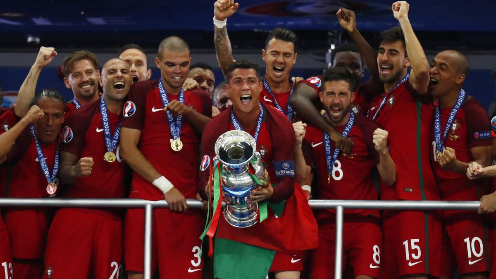
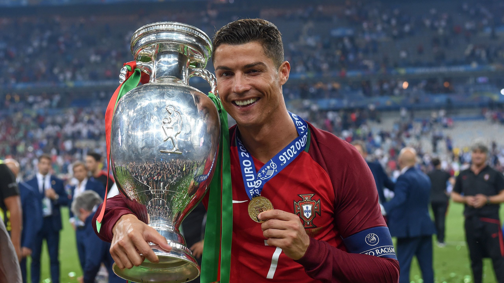

UEFA Euros


Cristiano Ronaldo's achievements with the Portugal national team stand as a testament to his leadership and excellence on the international stage. He led Portugal to their first major international trophy by winning the UEFA European Championship in 2016, overcoming hosts France in the final despite his early injury. Ronaldo's influence was pivotal in guiding the team through the tournament with decisive performances. In 2019, he captained Portugal to another historic triumph, lifting the inaugural UEFA Nations League trophy after defeating the Netherlands in the final. These victories solidified Ronaldo's legacy as the greatest footballer to ever represent his country.